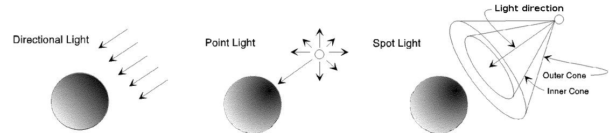
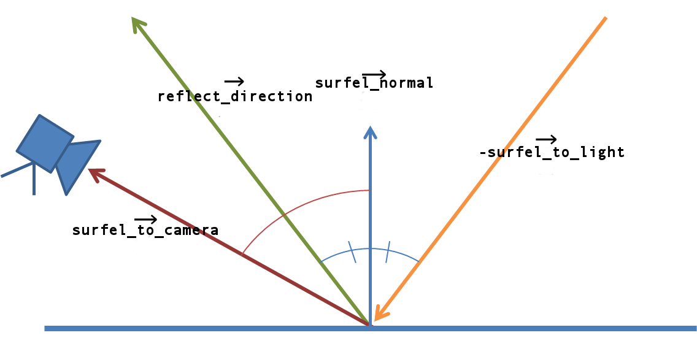

Practical 6 - Local Illumination
In all previous practicals, the scene was not really pleasant to see. Indeed, the depth of objects was not perceptible and the appearance was neither realistic nor expressive. It is high time to change that! In this practical we will implement basic local illumination techniques: nothing fancy, just enough to bring back the fun in your scene.
1. Reminder: How to compile from scratch
#Switch to a C++11 compiler (at ENSIMAG only)
source gcc493.sh
#Compile external libraries (if new lib has been added)
cd extlib/
make clean_all
make
#Compile project
cd ../
rm -rf build/
mkdir build/
cd build/
cmake ..
make -j 82. Additional files
- Download the source of the practical here .
- Unzip it.
- Copy the extlib directory from you previous practical in this new directory called practical6.
Alternatively, you can simply create a symbolic link to the existing libraries.
For example: cd practical6 then ln -s ../practical2/extlib - Compile your project by following the previous instructions.
3. About the provided code
The viewer is now able to manage lights: one directional light, a list of spot lights and a list of point lights. Those lights are automatically set on the GPU for the shader programs managed by the Viewer, provided the shader programs have the right uniforms in their sources (look at phongFragment.glsl to see those uniforms).
Most of the work takes place on the GPU side, in the GLSL fragment shader phongFragment.glsl.
The provided code enables to add different type of lights in the scene in order to lit objects and to reflect their material properties. Lights and material are based on the local illumination model of Phong.
For this practical, CPU and GPU code is provided.
- CPU code is encapsulated into C++ classes that are gathered in a lighting subdirectory.
- GPU code is gathered in the shaders subdirectory.
The first group of class is the core of the lighting system:
-
The
DirectionalLight,PointLight,SpotLightclasses. They define the attributes of the different kind of light in the Phong illumination model and provide functions to send these attributes to the GPU. (See this section) -
The
Materialclass. It defines the material of an object in the Phong illumination model.
The second group of class are Renderable objects used for vizualisation:
-
The
DirectionalLightRenderableclass,PointLightRenderable,SpotLightRenderableclass. These classes allow to debug the parameters of your lights and animate your light or to control it with keyboard input. Indeed, such functionalities are easily implemented thanks to a Renderable class. -
The
LightedMeshRenderable,LightedCylinderRenderableclass. They are similar to the renderable classes of previous practicals, but with the ability to be lit by lights. This is the kind of class you will need to adapt in your project to compute nice rendering for you scene.
The third group of code are the shaders. These are the files you will work on during this practical:
- The vertex shader phongVertex.glsl.
- The fragment shader phongFragment.glsl.
The viewer class was also modified to take into lights.
We strongly advise you to update all the code and not only the aforementionned classes.
You do not need to call make to update your shaders.
Shaders are compiled at run-time.
The Viewer can reload, compile and link them on demand if you press F3.
Edit your shader sources and press F3 to see the results, without relaunching the executable.
4. Light mecanism
You already know that in the fragment shader processes fragments. A fragment is a linear (trilinear in case of triangle primitives) interpolation of vertex attributes, projected onto the screen. If the fragment is on top of all primitive fragments (its depth is smaller), it will become a pixel.
Here, vertices have position and normal attributes. Thus, fragments will have those two attributes too and will represent surfels: surface elements. While it may look like fragments and surfels are the same, keep in mind that they are in different spaces: fragments are on the 2D screen (screen coordinates) while surfel are in the 3D world (world coordinates).
A light is applied to a surfel. According to the Phong model, this light will react to the position and normal of the surfel, and also to the material applied on the surface. We will explain here how the light react to such properties to compute the appearance of a surfel. You may find different model on the internet: that's fine, people are adapting the same model to suits their need.
Light types
Three kind of (standard) lights are used in this tutorial:
- A directional light represents a light which source is so far away from the camera that the light rays can be considered parallel when they reach an object, regardless of the position of the objects or the camera. A good example is the sun. For such a light, we have the following direction: \(\overrightarrow{\mathit{surfel\_to\_light}}=-\overrightarrow{\mathit{light\_direction}}\)
- A point light is located at a given position, and illuminates in all directions. Good examples of point light are torches. Usually, the light intensity received by an objet decreases when its far from the source. In this case, we have this direction to light: \(\overrightarrow{\mathit{surfel\_to\_light}}=\text{normalize}(\mathit{light\_position}-\mathit{surfel\_position})\).
- A spot light is light which source is located somewhere in the environment, but rays are only shot in some directions instead of all around. An object receives light only if located in the cone defined by the spot. A good example of a spotlight would be a street lamp. The set of possible light ray directions is modelized by two cones with the same apex and directions. We will see their explanation in exercice 3 and exercice 4.
Phong's decomposition of light color

The Phong illumination model relies on the decomposition of a light \(\mathit{L}\) color into three components: ambient, diffuse and specular.
- The ambient component \(\mathit{L}_a\) specifies a minimum brightness. Even if there is no light ray directly hitting a surfel, the ambient component will lit a little this surfel, preventing it from being completely dark. The ambient component is constant for all surfels. It could be understood as what remains from a light's color after rays have infinitely bounced in every directions.
- The diffuse component \(\mathit{L}_d\) is the most important one to give a 3D appearance to a surfel. It models the light's color received by a ray directly hitting the surfel.
- The specularity \(\mathit{L}_s\) is the shiny component of the light, i.e. the color of a shiny spot on the object.
The color of a surfel is also divided into this three components. However, instead of being vertex attributes, those components are the same for the whole object. Combined, those components form the material of such object. The material defines how a surfel will react to the ambient, diffuse and specular components of a light. Sometimes, the diffuse component of the material can be replaced by a vertex attribute: it depends on what you want to render.
Appearance computation
The appearance of a surfel lit by a particular light \(\mathit{L}\) is computed from:
- the color components of the light \(\mathit{L}_a, \mathit{L}_d, \mathit{L}_s\),
- the material of the object \(\mathit{K}_a, \mathit{K}_d, \mathit{K}_s\) and \(\mathit{shininess}\)
- the position and the normal of the surfel \(\mathit{surfel\_position}, \mathit{surfel\_normal}\),
- and the other light properties (more about that in the exercices).
The appearance is computed component by component, then summed to obtain the contribution of a particular light to a surfel. When there are more than one light in the scene, the contributions of all lights are added. The result is the final appearance of a surfel, i.e. the color of its fragment.
Without taking into account distance attenuation and spot attenuation, the appearance computation for one light is given by:
\[ \begin{eqnarray*} &\text{vec3 ambient} &= 1 &* \mathit{L}_a &* \mathit{K}_a \\ &\text{vec3 diffuse} &= \text{diffuse_factor} &* \mathit{L}_d &* \mathit{K}_d \\ &\text{vec3 specular} &= \text{specular_factor} &* \mathit{L}_s &* \mathit{K}_s \\ \end{eqnarray*} \]The diffuse factor allows to decrease the diffuse component when the \(\mathit{surfel\_to\_light}\) and \(\mathit{surfel\_normal}\) directions are too different. Indeed, when they are different, fewer photons will be reflected in the direction of the camera. The diffuse factor is then:
\[ \text{diffuse_factor} = \max(\overrightarrow{surfel\_normal} \cdot \overrightarrow{surfel\_to\_light}, 0.0); \]The maximum function is here to keep the diffuse factor non negative. It is valid since when the dot product is negative, the ray arrive from under the surface. Thus, the ray will never hit the surface on the direction we are interested in (assuming the normals of surfels are pointing in such direction). Using minimum or maximum to keep the values in valid ranges is a common thing in Computer Graphis and is referred to as clamping.
The specular factor is more difficult to understand. This is why we will only give its equation. It uses the reflected direction of the light relatively to the surfel normal:
 \[ \text{specular_factor} = \text{pow}(\max( \overrightarrow{\mathit{surfel\_to\_camera}} \cdot \overrightarrow{\mathit{reflect\_direction}}, 0), \mathit{shininess}) \]Again, here we have a maximum function to avoid strange values (real power of a negative value) while remaining correct (if the dot product is negative, this means the camera is not in the cone of highly dense photons reflected by the surfel giving birth to a shiny spot).
Exercice 1: Phong shading
- Start the main program and check that you get the expected result.
- In practical_05_scene.cpp, observe how the scene is set up.
- In phongFragment.glsl, read carefully the
computeDirectionalLight()function and make the parallel with the the equations of Phong.
Exercice 2: Attenuation
To get a more realistic approximation of the light, one cheap improvement is to simulate its intensity decay through a medium. In computer graphics, we model this attenuation \(a\) thanks to three coefficients and the distance from the light to the surface of the lit object \(d\):
\[ \mathit{a} = \frac{1}{ k_{\mathit{constant}} + k_{\mathit{linear}} * d+ k_{\mathit{quadratic}} * d^2} \]The three factors \(k_{\mathit{constant}}\), \(k_{\mathit{linear}}\) and \(k_{\mathit{quadratic}}\) are properties of a light, and are applied to the three illumination components computed of a surfel (ambient, diffuse and specular).
-
In phongFragment.glsl, in the function
computePointLight(), implement the aforementionned attenuation model and apply it to the light attributes. - Do the same for the spot light.
- Check that you get a result similar to the one below.
Exercice 3: Spot light
A spot light cast light inside a cone of direction \(\overrightarrow{\mathit{spot\_direction}}\) with an aperture \(\theta\). Whenever a surfel is outside this cone, it is not lit by the spot (i.e. the spot intensity is set to 0 for this surfel). This case occurs when:
\[ \cos(\phi) = \overrightarrow{\mathit{surfel\_to\_light}}\cdot(-\overrightarrow{\mathit{spot\_direction}}) \lt \cos(\theta)\]-
In phongFragment.glsl, modify the function
computeSpotLight()so that it takes into account the cone aperture and computes correctly the spot intensity factor. - Check that you get a result similar to the image below.
Exercice 4: Smooth spot edges
You can see that the spot light has hard edges that are not likely to appear in the real world. To increase the realism of a spot light, we will use two cones of light. The first cone, named the inner cone, is the same as before, with an aperture of \(\theta_{\mathit{inner}}\). The second cone is larged and referred to as the outer cone, with an aperture of \(\theta_{\mathit{outer}}\). When a surfel is between the inner and the outer cone, its intensity value will be between 0 and 1. If the surfel is inside the inner cone, its intensity is still 1, while when outside both cones, its intensity is set to 0. To compute the spot intensity, we have the following nice formula:
\[ \mathit{intensity} = clamp\left( \frac{ \cos(\phi) - \cos(\theta_{\mathit{outer}}) }{\cos(\theta_{\mathit{inner}}) - \cos(\theta_{\mathit{outer}}) }, 0, 1 \right)\]- Implement this other version of the spot light intensity.
- Check that you get a result similar to the expected one.
Exercice 5: project related
- Transfer the light system to your project scene.
- If you are curious, you know the basics to look for other interesting rendering methods, such as toon shading or fog.